<div class="footer_backgorund">
  <ul class="nav nav-tabs" id="myTab" role="tablist">
    <li class="nav-item active" [routerLink]="['/dashboard1']">
      <a class="nav-link active" id="home-tab" data-toggle="tab" href="#home" role="tab" aria-controls="home"
        aria-selected="true">
        
        Dashboard</a>
    </li>
    <li class="nav-item" [routerLink]="['/qr-code']">
      <a class="nav-link" id="profile-tab" data-toggle="tab" href="#profile" role="tab" aria-controls="profile"
        aria-selected="false">
        
        QR code Check-in
      </a>
    </li>
    <li class="nav-item" [routerLink]="['/guest-list']">
      <a class="nav-link" id="contact-tab" data-toggle="tab" href="#contact" role="tab" aria-controls="contact"
        aria-selected="false">
        
        Guest List </a>
    </li>
    <li class="nav-item" [routerLink]="['/setting']">
      <a class="nav-link" id="contact-tab" data-toggle="tab" href="#contact" role="tab" aria-controls="contact"
        aria-selected="false">
        
        Setting</a>
    </li>
  </ul>
</div>

  <!-- <ion-tabs class="bottom_ftr">

  <ion-tab-bar slot="bottom" class="footer_background">
      <ion-tab-button    [routerLink]="['/dashboard1']">
        
        <ion-label>Dashboard</ion-label>      
      </ion-tab-button>
  
      <ion-tab-button  [routerLink]="['/qr-code']">
        
        <ion-label> QR code Check-in</ion-label>
      </ion-tab-button>
  
      <ion-tab-button [routerLink]="['/guest-list']">
        <ion-icon name="map"></ion-icon>
        <ion-label>Guest List</ion-label>
      </ion-tab-button>
  
      <ion-tab-button  [routerLink]="['/settings']">
        <ion-icon name="information-circle"></ion-icon>
        <ion-label>setting</ion-label>
      </ion-tab-button>
    </ion-tab-bar>
  </ion-tabs> -->